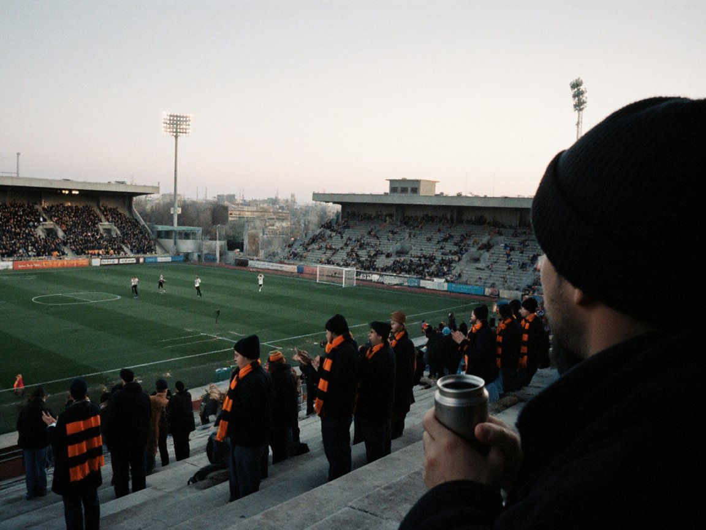

The derby decides it all: Neftchi need nothing less than a win
On Saturday Neftchi host Tulpar at NurGaz Stadium in the last round of the league. A draw is enough for the Talas side.

The 2026 Irad League ends the way Nurzhan has dreamed since spring: the Kara-Ak derby, round 27, Saturday 31 October, 18:00. After 26 rounds Tulpar have 62 points, Neftchi 60.
The sums are simple. A draw or an away win makes Tulpar champions for the twelfth time. A Neftchi win brings our team its fourteenth title by a single point.
At the end of September, four rounds from the finish, Tulpar were six points clear. Since then the Talas side have drawn twice, last Saturday 1–1 at home to Attelkom. Neftchi took three points at Temirjolchu the same weekend, 1–0.
Both meetings this season were drawn: 1–1 at NurGaz Stadium on 16 May and 0–0 at Silk Road Arena on 8 August. Up to the end of 2025 the two clubs had played 118 league derbies: 46 Neftchi wins, 43 for Tulpar, 29 draws.
NurGaz Stadium, opened in 1958 as the Neftyanik, holds 16,500. IradOne Sport shows the match live, and IradOdin carries it with Russian commentary. The other round-27 games start at 17:00.
Neftchi also play the Irad Cup final on 7 November, against Attelkom at Silk Road Arena in Talas.